1080C80 exhaust gas water heat exchanger for egr valve r r
- Path
- Procedures > 10 ENGINE > 1080 EMISSION CONTROL SYSTEM > 1080C exhaust gas recirculation system (e.g.r.) > 1080C80 exhaust gas water heat exchanger for egr valve r r
- Kind
- repair procedure (removal / refitting; the operation number is the code)
- Applies to
- all engines; all production periods
- Interactive page
- https://sloeber94.github.io/elrnDB-fDbl/en/#/2584508
Applies to: all engines; all production periods
 Removing
Removing
 Refitting
RefittingPosition the vehicle on the ramp.
Proceed with the removal 1044B10 fuel filter assembly - r + r or replace .
Proceed with the removal 5530B10 battery - r+r .
Proceed with the removal 5530B52 Battery DRIP TRAY/SUPPORT - R.R. .
Proceed with the removal 7055B54 under-engine guard - r r .
1. Disconnect the lower coolant inlet hose from the radiator, radiator side.
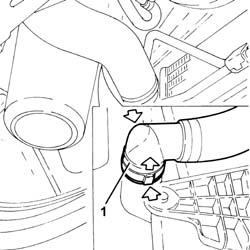
Applies to: all engines; all production periods
1. Loosen the band (1a) and disconnect the T connector (1b) from the turbocharger air intake hose.
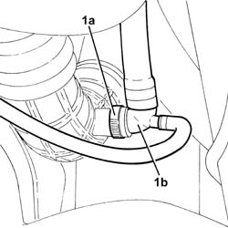
Applies to: all engines; all production periods
1. Loosen the band (1a) and disconnect the air intake sleeve to the turbocharger (1b), turbocharger side.
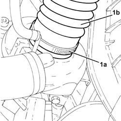
Applies to: all engines; all production periods
1. Disconnect the electrical connection from the air flow meter.
 | Name | Connector |
|---|---|---|
1 | Air flow meter | K41 |
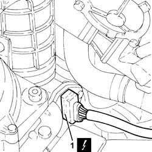
Applies to: all engines; all production periods
1. Loosen collar (1a) and remove the air intake sleeve to the turbocharger (1b) complete with flow meter (1b).
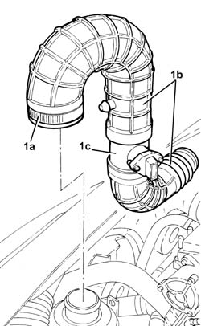
Applies to: all engines; all production periods
1. Undo the bolts (1a) and (1b), then remove the engine oil return pipe from EGR solenoid to throttle body (1c).
2. Remove the gaskets.
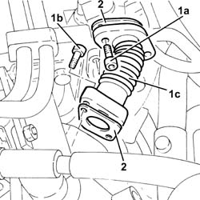
Applies to: all engines; all production periods
1. Disconnect the electrical connection from the E.G.R. valve.
| Name | Connector |
|---|---|---|
1 | EGR solenoid | L30 |
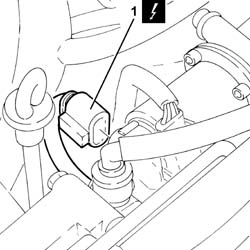
Applies to: all engines; all production periods
1. Undo bolts (1a) and disconnect the water/exhaust gas heat exchanger for the E.G.R. system (1b) from the EGR system solenoid.
2. Undo the bolts (2a) and remove the E.G.R. system solenoid valve (2b).
3. Remove the bracket.
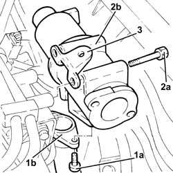
Applies to: all engines; all production periods
1. Release the vacuum pipe from the retaining band.
2. Disconnect the vacuum pipe from the pneumatic valve on the throttle body.
3. Loosen the band and disconnect the oil vapour recovery pipe from the tappet cover.
4. Loosen the band fixing the air inlet hose to the electropneumatic throttle body.
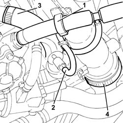
Applies to: all engines; all production periods
1. Undo bolts (1a) and remove the pneumatic throttle body (1b).
2. Remove the gasket.
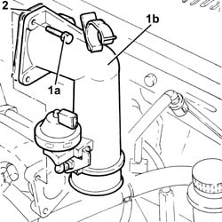
Applies to: all engines; all production periods
1. Disconnect the electrical connection from the turbocharger vane actuator solenoid.
| Name | Connector |
|---|---|---|
1 | Data not available yet |
2. Release the turbocharger vane position actuator solenoid from the protection on the gearbox.
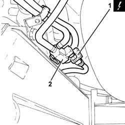
Applies to: all engines; all production periods
1. Tighten the bolts fixing the water/exhaust gas heat exchanger for the E.G.R. system to the exhaust manifold.
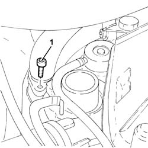
Applies to: all engines; all production periods
1. Disconnect the electrical connection from the engine coolant temperature sensor.
| Name | Connector |
|---|---|---|
1 | Data not available yet |
2. Loosen the collars and disconnect the upper coolant inlet hose to the radiator from the thermostat.
3. Loosen the collars and disconnect the outlet pipe from the climate control system heater (3a) from the thermostat T-connector and the delivery pipe to the rigid fluid intake pipe to the coolant pump (3b).
4. Loosen the collar and disconnect the coolant supply pipe to the climate control system heater from the thermostat.
5. Loosen the band and disconnect the coolant return pipe to the coolant reservoir from the thermostat.
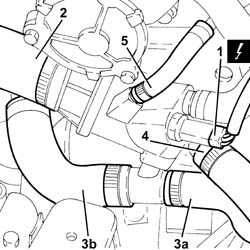
Applies to: all engines; all production periods
1. Loosen the band and disconnect the coolant intake pipe (1a) and the coolant outlet pipe (1b) from the EGR exhaust gas heat exchanger.
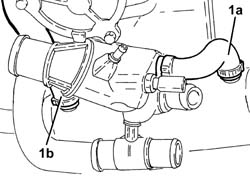
Applies to: all engines; all production periods
1. Disconnect the electrical connections from the injectors and move the wiring aside.
| Name | Connector |
|---|---|---|
1 | Injector | N70 |
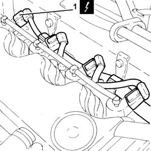
Applies to: all engines; all production periods
1. Tighten the bolts fixing the water/exhaust gas heat exchanger for the E.G.R. system.
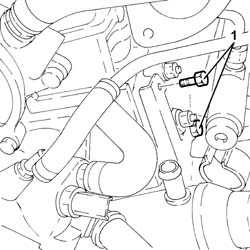
Applies to: all engines; all production periods
1. Undo the nut securing the water/exhaust gas heat exchanger for the E.G.R. system to the cylinder head.
2. Undo pin (2a), bolt (2b) and remove thermost (2c) together with the EGR system water/exhaust gas heat exchanger (2d).
3. Remove the thermostat gasket.
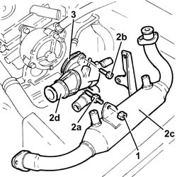
Applies to: all engines; all production periods
Refitting
Removing1. Place the water/exhaust gas heat exchanger for the E.G.R. system (1a) and thermostat (1b) back in its housing with gasket (1c).
2. Tighten pin (2a) and bolt (2b) securing the thermostat to the specified torque.
 | Fastening | Component | Ø | Value (daNm) |
|---|---|---|---|---|
2a | Pin | ENGINE THERMOSTAT | M8 | (Cylinder head side) 2.3 ÷ 2.8 |
| Fastening | Component | Ø | Value (daNm) |
|---|---|---|---|---|
2b | Bolt | ENGINE THERMOSTAT | M8 | (Cylinder head side) 2.3 ÷ 2.8 |
3. Tighten the bolt and nut securing the EGR water/exhaust gas heat exchanger to the cylinder head.
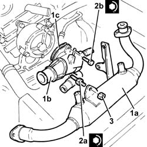
Applies to: all engines; all production periods
Tighten the bolts fixing the water/exhaust gas heat exchanger for the E.G.R. system .
Place the electrical wiring back in its housing and connect the electrical connections to the injectors.
Connect the engine coolant inlet pipe and the engine coolant outlet pipe to the E.G.R. exhaust gas heat exchanger.
Connect the coolant return pipe to the coolant reservoir to the thermostat.
Connect the coolant supply pipe to the climate control system heater to the thermostat and tighten the collar.
Connect the outlet pipe from the climate control system heater and the delivery pipe to the rigid inlet pipe to the coolant pump from the thermostat T-connector and tighten the collars.
Connect the upper coolant inlet hose to the radiator to the thermostat and tighten the collar.
Connect the electrical connection to the engine coolant temperature sensor.
Tighten the bolts fixing the water/exhaust gas heat exchanger for the E.G.R. system to the exhaust manifold.
Secure the turbocharger vane position actuator control solenoid to the protection on the gearbox.
Connect the electrical connection to the turbocharger vane actuator solenoid.
1. Replace the pneumatically-controlled throttle body (1a), complete with gasket (1b), back in its housing and secure by tightening bolts (1c) to the recommended torque.
| Fastening | Component | Ø | Value (daNm) |
|---|---|---|---|---|
1c | - | - | - | - |
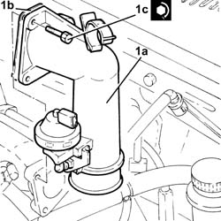
Applies to: all engines; all production periods
Tighten the band securing the air inlet hose to the electropneumatic throttle body.
Connect the oil vapour recovery pipe to the tappet cover and secure with a band.
Connect the vacuum pipe to the pneumatic valve on the throttle body.
Secure the vacuum pipe to the retaining band.
Refit the E.G.R. system solenoid with spacer and tighten it using the bolts.
Connect the EGR system water/exhaust gas heat exchanger to the EGR system solenoid and tighten the bolts.
Connect the electrical connection to the E.G.R. valve.
Refit the rigid pipe from EGR solenoid to throttle body in its housing complete with gasket and fix it with the bolts.
Refit the hoses from the air intake sleeves to the turbocharger complete with air flow meter and tighten the relevant bands.
Connect the electrical connection to the air flow meter.
Connect the air intake sleeve to the turbocharger, turbocharger side, and tighten the band.
Connect the T-connector to the turbocharger air intake hose and tighten the band.
Connect the lower coolant outlet hose to the radiator.
Proceed with the refitting 7055B54 under-engine guard - r r .
Proceed with the refitting 5530B52 Battery DRIP TRAY/SUPPORT - R.R. .
Proceed with the refitting 5530B10 battery - r+r .
Proceed with the refitting 1044B10 fuel filter assembly - r + r or replace .
Refill the engine cooling system with coolant 0010T20 coolant change .
Remove the car from the ramp.